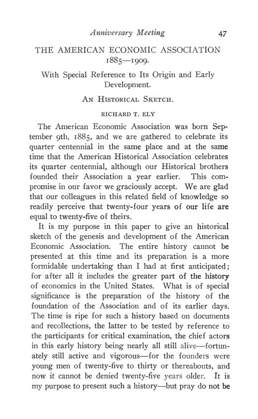

Nova York, 1909: 25 anos da associação, salários, trustes e impostos
Leitura: 7 min
Nova York, dezembro de 1909: a associação comemora 25 anos, Ely conta a fundação em Saratoga, Dewey cobra dados melhores e Taussig revê a teoria dos salários.


Na noite de 27 de dezembro de 1909, uma tempestade impediu o presidente William H. Taft de chegar a Nova York. Joseph H. Choate, que presidia a sessão no Carnegie Hall, leu o telegrama da Casa Branca: a ferrovia não garantia a chegada a tempo, e Taft precisava estar na Casa Branca logo cedo. Coube ao prefeito George B. McClellan, a poucos dias de deixar o cargo, ao presidente da Universidade Columbia, Nicholas Murray Butler, e ao governador Charles E. Hughes dar as boas-vindas a duas associações que completavam 25 anos: a American Historical Association e a American Economic Association.
A vigésima segunda reunião anual da associação de economistas foi também a do jubileu. O volume reúne as falas da recepção, o discurso presidencial de Davis R. Dewey, a sessão comemorativa na Universidade Columbia e as mesas sobre dinâmica econômica, teoria dos salários, vida rural, avaliação de empresas de serviço público, trustes e tributação. Butler descreveu o público como cerca de mil estudiosos de história, economia e ciência política. Hughes lembrou-lhes que o trabalho deles era prático e deveria servir a administradores e governantes.
Quem estava em Saratoga?
Dewey abriu a sessão de aniversário, na noite de 28 de dezembro, com uma lembrança pessoal. Fora um dos que se reuniram em Saratoga quando a organização da associação foi discutida pela primeira vez. Disse que festa de aniversário não era hora de crítica nem de reflexão muito séria, e passou a palavra a Richard T. Ely, primeiro secretário da associação.
Ely contou a história com documentos. A associação nasceu em 9 de setembro de 1885, numa reunião paralela à da American Historical Association, à qual pertenciam quase todos os economistas. A convocação, assinada por H. C. Adams, J. B. Clark e pelo próprio Ely, chamou os interessados para o Bethesda Parish Building. Francis A. Walker foi eleito presidente. A constituição trazia uma declaração de princípios: o Estado como agente cuja ajuda positiva é condição do progresso, o estudo histórico e estatístico das condições reais, a cooperação entre igreja, Estado e ciência na questão social e nenhuma posição partidária em política comercial. Segundo Ely, ninguém jamais assinou o texto, que não era um credo e foi abandonado depois por votação unânime e sem oposição.
“Todos nos considerávamos investigadores científicos, e não propagandistas.” (“We all considered ourselves scientific investigators and not propagandists.”)
Seguiram-se as homenagens. Arthur T. Hadley, então presidente de Yale, lembrou os fundadores em seus empregos de juventude e disse que a grande conquista da associação não era o número de sócios nem de publicações, mas a mudança de atitude do público diante do conhecimento especializado em economia. J. Laurence Laughlin falou dos problemas que estavam em aberto, da tarifa ao sistema bancário. James Bonar, então no Canadá, agradeceu a amizade dos colegas. Edmund J. James, doente, mandou uma carta lida pelo filho, em que contou sua ida à Alemanha em 1875 para estudar economia e atribuiu a Ely o mérito de ter feito a associação existir.
O que Dewey cobrou dos economistas?
O discurso presidencial, Observation in Economics, evita de propósito a velha disputa entre dedução e indução. Dewey aceita que a teoria é essencial e pergunta pela qualidade dos fatos. A coleta de dados avançara muito desde o censo de 1880, a ponto de se saber quantos ovos eram postos no Alasca. Mas ainda faltavam séries confiáveis de salários, de custos de produção e de nascimentos. Para Dewey, os bureaus de estatística produziam em condições de monopólio, sem uma demanda especializada que separasse o útil do inútil, e os governos deveriam pôr a coleta sob direção de cientistas desde a observação original.
“colunas de números não são estatística” (“columns of figures are not statistics”)
Quais debates ocuparam as sessões?
Duas sessões trataram de teoria. O italiano M. Pantaleoni, ausente, enviou um ensaio sobre dinâmica econômica, debatido por J. B. Clark, S. N. Patten e Frank A. Fetter. F. W. Taussig propôs que o salário é dado pelo produto marginal descontado do trabalho e foi contestado por G. R. Wicker, L. C. Marshall e J. H. Hollander. Na mesa sobre vida rural, Sir Horace Plunkett defendeu a organização dos agricultores, com o apoio de James Bryce, embaixador britânico, e de T. N. Carver.
A sessão mais longa, sobre a avaliação oficial do patrimônio de ferrovias e empresas de serviço público, opôs Henry C. Adams, que via na avaliação a base para tarifas, emissão de títulos e tributação, a W. H. Williams, Frederick W. Whitridge e Joseph P. Cotton Jr. Sobre trustes, Francis Walker propôs nove remédios, Victor Morawetz defendeu o Sherman Act e J. W. Jenks lembrou que a maioria das indústrias não pode ser monopolizada. A tributação fechou o volume, com o balanço de 25 anos de Edwin R. A. Seligman e as regras de avaliação de imóveis de Lawson Purdy.
Na minha leitura
Na minha leitura, o discurso de Dewey é a peça mais atual do volume, porque trata a estatística pública como um problema de organização da produção, e não apenas de método. O diagnóstico é econômico: um serviço sem demanda especializada e sem concorrência tende a produzir o que é fácil de contar, não o que é útil para decidir. A solução proposta, trazer quem usa os dados para o desenho da coleta, desde a primeira observação, continua a ser a regra básica de qualquer sistema estatístico.
A sessão sobre avaliação de empresas de serviço público mostra por que isso importava. A divergência na mesa não era sobre se tarifas de monopólio podem ser reguladas, mas sobre a base de cálculo: o custo dos ativos apurado pelo governo, o valor de uso do serviço ou nenhum valor oficial. Sem números confiáveis sobre o capital investido, a regulação fica entre duas escolhas ruins: aceitar o valor declarado pela empresa ou arbitrar um valor sem fundamento.
Glossário
- Estática e dinâmica
- análise do equilíbrio em condições dadas e análise dos movimentos de mudança que levam, ou não, a um novo equilíbrio.
- Produto marginal descontado
- na formulação de Taussig, o produto do último trabalhador, descontado pelos juros, porque o salário é adiantado antes de a produção terminar.
- Fundo de salários
- doutrina clássica segundo a qual os salários são pagos de um estoque de capital acumulado previamente.
- Valuation (avaliação oficial)
- levantamento, pelo governo, do valor do patrimônio de ferrovias e empresas de serviço público para fins de tarifa, títulos ou impostos.
- Custo de reposição
- quanto custaria construir hoje os mesmos ativos físicos de uma empresa.
- Sherman Act
- lei federal americana de 1890 que proíbe acordos que restringem o comércio e a monopolização.
- Imposto geral sobre a propriedade
- tributo estadual e local que pretendia alcançar com a mesma alíquota imóveis e bens pessoais, inclusive títulos.
- Incremento não ganho (unearned increment)
- valorização da terra que não resulta do trabalho ou do investimento do proprietário.
Artigos desta edição
- Citizens' Meeting and Official Welcome, Carnegie Hall, Monday Evening, December 27, at 8 P.M. — William M. Sloane, Joseph H. Choate, George B. McClellan, Nicholas Murray Butler e Charles E. Hughes (pp. 1–28). William M. Sloane abre a sessão em nome do comitê conjunto e passa a presidência a Joseph H. Choate. Choate recorre ao dicionário para definir economia e defende Nova York da fama de cidade apenas mercantil. O prefeito George B. McClellan, a menos de cem horas de deixar o cargo, fala de história e homenageia Sloane, seu antigo professor. Nicholas Murray Butler descreve presidente, governador e prefeito como diretores de laboratórios de história, economia e ciência política. Choate lê o telegrama em que Taft se desculpa, e o governador Charles E. Hughes pede que o trabalho dos estudiosos sirva a quem governa. JSTOR
- Observation in Economics. Annual Address of the President — Davis R. Dewey; discurso presidencial (pp. 29–45). Dewey deixa de lado a disputa entre dedução e indução e trata da qualidade das observações. Reconhece o avanço da coleta de dados desde o censo de 1880, mas lista lacunas em salários, preços, custos de produção e nascimentos, e critica a massa de material inútil ou inexato. Mostra como até um preço exige definição precisa. Propõe que o ensino treine a observação e que os governos ponham a estatística sob direção de cientistas, porque os bureaus produzem sem demanda especializada, como monopólios subsidiados. JSTOR
- Anniversary Meeting, University Hall, Columbia University, Tuesday, December 28, 1909, at Eight P.M. — Davis R. Dewey; abertura da sessão de aniversário (pp. 46). Breve abertura da sessão na University Hall de Columbia, em 28 de dezembro de 1909. Dewey diz que a noite é de lembranças e congratulações, não de crítica, e conta ter sido um dos 21 reunidos em Saratoga quando a fundação foi discutida; catorze estavam vivos, e não mais de três na sala. Apresenta Richard T. Ely. JSTOR
- The American Economic Association 1885-1909 — Richard T. Ely; com falas de Arthur T. Hadley, J. Laurence Laughlin, James Bonar e Edmund J. James (pp. 47–111). Ely reconstitui a fundação com documentos: o projeto anterior de Edmund J. James e Simon N. Patten para uma Society for the Study of National Economy, a convocação em Saratoga, a eleição de Francis A. Walker e a declaração de princípios, que nunca foi assinada e acabou abandonada por unanimidade. Inclui uma tabela das 22 reuniões anuais, de Saratoga a Nova York, com os temas de cada uma. Hadley atribui à associação a mudança de atitude do público diante do conhecimento especializado; Laughlin, Bonar e James acrescentam lembranças e agradecimentos. JSTOR
- The Phenomena of Economic Dynamics — M. Pantaleoni; resumo do trabalho (pp. 112–122). Resumo do ensaio do economista italiano, lido na reunião em sua ausência. Pantaleoni examina quatro tipos de mudança econômica: a extensão da zona de atividade econômica, a divisão dos gastos das empresas entre despesas gerais e específicas, a estrutura da população e as curvas de custo decrescente. Distingue a dinâmica que leva de volta a um equilíbrio daquela que não leva a nenhum equilíbrio previsível, e cita Pareto e os estudos de Marshall sobre custo decrescente. JSTOR
- The Phenomena of Economic Dynamics: Discussion — J. B. Clark, S. N. Patten e Frank A. Fetter (pp. 123–135). Clark argumenta que a zona dominada por forças políticas também é econômica: a distinção é entre zona competitiva e não competitiva. Patten diz ter sido o primeiro a usar o contraste entre estático e dinâmico e o primeiro a abandoná-lo, porque a economia normal é dinâmica. Fetter separa três contrastes diferentes no texto e o considera fértil e oportuno, mas não revolucionário. JSTOR
- Outlines of a Theory of Wages — F. W. Taussig (pp. 136–156). Taussig revê as teorias americanas do salário. A teoria residual de Walker não resistiu à crítica, e a do produto específico de Clark, para ele, terá o mesmo destino, pelas objeções de Böhm-Bawerk. Sua fórmula: o salário é o produto marginal descontado do trabalho, porque a produção leva tempo e o capitalista adianta a remuneração, como admitia, em seu núcleo, a velha doutrina do fundo de salários. O padrão de vida só afeta o salário pelo número de trabalhadores, e o último meio século, com salários em alta e natalidade em queda, desmentiu a previsão de Mill. JSTOR
- Outlines of a Theory of Wages: Discussion — G. R. Wicker, L. C. Marshall e J. H. Hollander (pp. 157–170). Wicker contesta as conclusões de Taussig e vê na preferência temporal social o verdadeiro regulador. Marshall pergunta se a teoria repousa numa premissa duvidosa, se avança sobre as que rejeita e se não aumenta o descontentamento dos homens práticos com a teoria. Hollander considera a emenda plausível, mas sustenta que a teoria da produtividade marginal é estéril e que o caminho está no estudo dos fatos, na linha de Smith e Ricardo. JSTOR
- The Problems of Country Life. Round Table Discussion; Sir Horace Plunkett, Chairman — Sir Horace Plunkett (pp. 171–176). Plunkett defende o estudo sistemático dos problemas rurais, que a civilização urbana teria negligenciado. Sustenta que a cidade depende do afluxo constante de gente do campo e que esse fluxo precisa ser reequilibrado. Dá o exemplo dos agricultores dinamarqueses, organizados para vender manteiga, bacon e ovos no mercado britânico. Nos Estados Unidos e no Reino Unido, diz, a distribuição pertence aos comerciantes das cidades, que cobram de produtores e consumidores desorganizados. JSTOR
- The Problems of Country Life: Discussion — James Bryce, T. N. Carver e Horace Plunkett (pp. 177–183). Bryce elogia a cooperação na Dinamarca e na Irlanda e propõe levar indústrias para cidades menores: vinte cidades de cinquenta mil habitantes seriam melhores que uma de um milhão, inclusive pelo tempo perdido no deslocamento. Carver diz que a cidade atrai os melhores e os piores do campo e explica a pequena escala da agricultura por dificuldades geométricas, sazonais e temperamentais de supervisão. Plunkett descreve o crédito cooperativo irlandês. JSTOR
- Valuation of Public Service Utilities — Henry C. Adams (pp. 184–195). Adams sustenta três proposições: uma avaliação oficial é essencial para julgar a razoabilidade das tarifas, para controlar a emissão de títulos das empresas de serviço público e para fixar o que elas devem pagar ao Tesouro. Não confia na contabilidade de custos como guia de tarifas. Vê o poder público como sócio dessas empresas, porque cede ruas e direitos exclusivos, e propõe tratar o imposto como dividendo do público sobre sua parte do valor. Conclui que a avaliação não é panaceia, mas é parte essencial de qualquer programa. JSTOR
- Valuation of Public Service Corporations — W. H. Williams (pp. 196–238). Williams sustenta que o valor de uma ferrovia está no uso que se faz dela, não no patrimônio físico, e lista fatores como a localização em relação aos recursos que geram tráfego. Argumenta que a Interstate Commerce Commission já está sobrecarregada e que ela própria pediu ao Congresso para não ter de determinar o valor justo. Diz que as ferrovias não se opõem a ser avaliadas, mas a uma avaliação incompleta com chancela oficial, e rejeita os três usos propostos: tarifas, controle de títulos e tributação, já que o Congresso tributa o lucro líquido. JSTOR
- Official Valuations of Private Property — Frederick W. Whitridge (pp. 239–252). Whitridge abre com a história de um milionário que, ao visitar Harvard, quis saber quanto custara a universidade, convencido de que faria melhor com dinheiro. Relata que a comissão de serviços públicos de seu distrito decidiu avaliar as ferrovias urbanas da cidade, incluindo a que ele administrava, e que levou mais de um ano para saber o propósito. Critica a tendência de recorrer ao governo para cada queixa e a enxurrada de leis e regras sobre essas empresas. JSTOR
- An Argument Against an Official Valuation of Railroad Properties — Joseph P. Cotton Jr. (pp. 253–258). Cotton diz não conceber como medir em dólares o rio Hudson, o canal Erie ou a New York Central. Uma avaliação dessa ferrovia exigiria cinco anos e poderia superar o capital da empresa pela valorização dos terminais. Argumenta que nenhuma avaliação ajudaria a Interstate Commerce Commission a decidir uma tarifa específica e que, pelas decisões recentes da Suprema Corte, os tribunais só barram regulações flagrantemente injustas. Conclui que o plano promete pouco benefício e traz possibilidade grande de perigo. JSTOR
- Official Valuations of Railroad Properties-Discussion — Edward B. Whitney, Victor Rosewater, Charles F. Mathewson, A. C. Pleydell e outro debatedor (pp. 259–289). Whitney, advogado, diz que os tribunais pouco contribuem para o tema por falta de tempo. Rosewater lembra que a exigência de avaliação nasceu das próprias ferrovias, nos casos de tarifas máximas de Nebraska. Mathewson nega que haja sociedade entre acionistas e público. Pleydell responde ao exemplo do carroceiro: a concorrência regula os preços dele, mas só pode haver uma companhia de bondes numa rua. O último debatedor relaciona a avaliação também aos salários dos empregados dessas empresas. JSTOR
- The Causes of Trusts and Some Remedies for Them — Francis Walker (pp. 290–320). Walker define combinações industriais e monopólios e examina suas causas, deixando de lado o aspecto jurídico. Resume nove remédios: restrições a patentes e concessões, controle de recursos naturais, fim das discriminações no transporte, proibição de concorrência desleal, ajustes tarifários, corporações federais sob controle estrito, proibição de acordos não licenciados, licença e tributação federal das combinações e um órgão administrativo de fiscalização e publicidade. Empresas dominantes por eficiência superior e conduta leal não seriam necessariamente condenáveis. JSTOR
- The Sherman Anti-Trust Act — Victor Morawetz (pp. 321–327). Morawetz responde às críticas de Wall Street ao Sherman Act. A lei tem duas proibições, contra contratos e combinações que restringem o comércio e contra a monopolização, e os tribunais nunca decidiram que todo acordo que reduz a concorrência é ilegal. Defende manter a lei, porque a concorrência desenvolve a iniciativa e a monopolização levaria a uma regulação hostil, aplicando-a contra a monopolização e não contra combinações grandes enquanto tais. JSTOR
- The Sherman Anti-Trust Act: Discussion — J. W. Jenks (pp. 328–330). Jenks, que não é advogado, comenta apenas as opiniões econômicas de Morawetz. Discorda do temor de monopolização geral: há tendência ao monopólio em certas indústrias, sobretudo os monopólios naturais, mas a maioria não pode ser monopolizada, como a dos retratistas. Sugere que um imposto sobre a renda líquida daria ao governo informação para reconhecer e controlar os monopólios inevitáveis. JSTOR
- The Progress of Taxation during the Past Twenty-Five Years, and Present Tendencies — Edwin R. A. Seligman (pp. 331–353). Seligman trata teoria e prática fiscal como os dois lados de uma mesma medalha. Destaca a eficiência administrativa, com o exemplo da avaliação de imóveis na cidade de Nova York, e a ênfase crescente em considerações sociais, e não só individuais, na repartição dos tributos. Prevê que o imposto de renda americano do futuro será nacional, e não estadual, e cita a luta contra o imposto geral sobre a propriedade, a separação das fontes estaduais e locais e a difusão do imposto sobre heranças. JSTOR
- The Progress of Taxation: Discussion — Frank L. McVey e Henry Higgs (pp. 354–359). McVey registra a melhoria na administração dos tributos estaduais e diz que a velha crença no imposto geral sobre a propriedade resiste, citando a comissão tributária do Oregon. Higgs, funcionário do Tesouro britânico, recusa-se a comentar o projeto de lei de finanças inglês, diz concordar com Seligman e dá o exemplo australiano de tributo usado também para regular condições de trabalho. JSTOR
- The Assessment of Property for Taxation — Lawson Purdy; com debate de J. G. Schurman, John Martin, T. N. Carver, James L. Cowles, A. C. Pleydell, R. R. Bowker, Royal Meeker, Benj. C. Marsh, K. K. Kennan, Edward W. Bemis e Allen Ripley Foote (pp. 360–383). Purdy afirma que a tentativa de tributar bens pessoais como imóveis fracassou em toda parte e deve ser abandonada. Para imóveis, propõe avaliação anual, registro separado do valor do terreno, como na cidade de Nova York, e uma junta estadual com poder de ordenar reavaliações. Lembra que Ohio, até um ano antes, avaliava só uma vez a cada dez anos. No debate, Foote conta que Ohio passará a avaliar a cada quatro anos e que buscou no sistema de Nova York o modelo para a mudança. JSTOR
Fontes
- Citizens' Meeting and Official Welcome, Carnegie Hall, Monday Evening, December 27, at 8 P.M. (pp. 1–28). JSTOR · Internet Archive (PDF)
- Observation in Economics. Annual Address of the President (pp. 29–45). JSTOR · Internet Archive (PDF)
- Anniversary Meeting, University Hall, Columbia University, Tuesday, December 28, 1909, at Eight P.M. (pp. 46). JSTOR · Internet Archive (PDF)
- The American Economic Association 1885-1909 (pp. 47–111). JSTOR · Internet Archive (PDF)
- The Phenomena of Economic Dynamics (pp. 112–122). JSTOR · Internet Archive (PDF)
- The Phenomena of Economic Dynamics: Discussion (pp. 123–135). JSTOR · Internet Archive (PDF)
- Outlines of a Theory of Wages (pp. 136–156). JSTOR · Internet Archive (PDF)
- Outlines of a Theory of Wages: Discussion (pp. 157–170). JSTOR · Internet Archive (PDF)
- The Problems of Country Life. Round Table Discussion; Sir Horace Plunkett, Chairman (pp. 171–176). JSTOR · Internet Archive (PDF)
- The Problems of Country Life: Discussion (pp. 177–183). JSTOR · Internet Archive (PDF)
- Valuation of Public Service Utilities (pp. 184–195). JSTOR · Internet Archive (PDF)
- Valuation of Public Service Corporations (pp. 196–238). JSTOR · Internet Archive (PDF)
- Official Valuations of Private Property (pp. 239–252). JSTOR · Internet Archive (PDF)
- An Argument Against an Official Valuation of Railroad Properties (pp. 253–258). JSTOR · Internet Archive (PDF)
- Official Valuations of Railroad Properties-Discussion (pp. 259–289). JSTOR · Internet Archive (PDF)
- The Causes of Trusts and Some Remedies for Them (pp. 290–320). JSTOR · Internet Archive (PDF)
- The Sherman Anti-Trust Act (pp. 321–327). JSTOR · Internet Archive (PDF)
- The Sherman Anti-Trust Act: Discussion (pp. 328–330). JSTOR · Internet Archive (PDF)
- The Progress of Taxation during the Past Twenty-Five Years, and Present Tendencies (pp. 331–353). JSTOR · Internet Archive (PDF)
- The Progress of Taxation: Discussion (pp. 354–359). JSTOR · Internet Archive (PDF)
- The Assessment of Property for Taxation (pp. 360–383). JSTOR · Internet Archive (PDF)
- Sumário da edição no JSTOR: American Economic Association Quarterly, 3ª série, vol. 11, nº 1.
Documento em domínio público (EUA, publicado antes de 1931), via JSTOR Early Journal Content e Internet Archive. Resumo e comentário do autor deste site, sem afiliação com a American Economic Association. Encontrou um erro? Escreva: a correção é publicada no próprio texto, com data.
← Nº 103 · O Bulletin de dezembro de 1909: o aniversário, Newcomb e transportes Nº 105 · O Bulletin de março de 1910: a associação vota criar a AER →